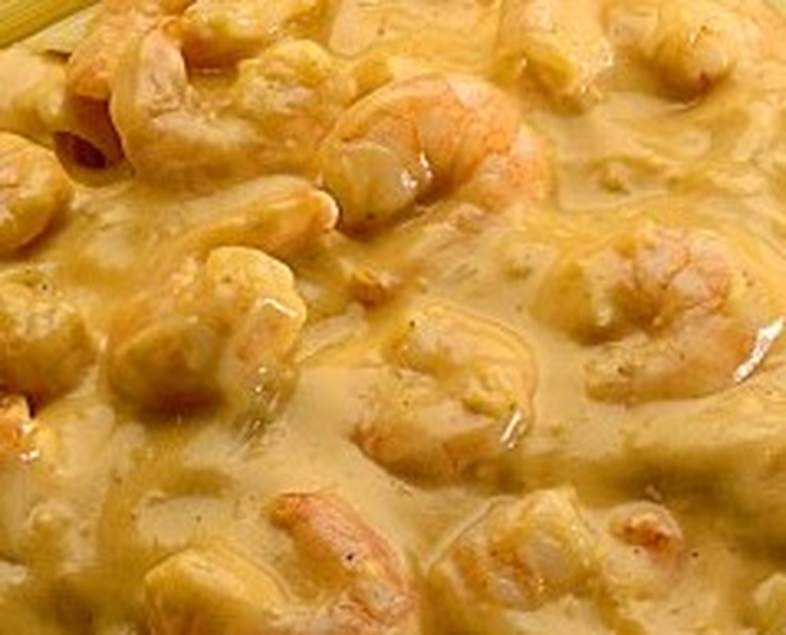

Strognoff de camarão
Ingredientes:
- 500g de camarão médios limpo
- 05 colheres de sopa de catchup picante Suavit
- 02 colheres de sopa de farina de trigo
- 02 colheres de sopa de manteiga
- 500 ml de creme de leite fresco
- sal e pimenta
Modo de Preparo
Tempere os camarões com sal, pimenta e a farinha.
Misture até a farinha ficar bem dissolvida.
Em uma panela, aqueça a manteiga.
Adicione os camarões e mexa em fogo alto até ficarem rosados.
Coloque o catchup Suavit e mexa glaçando levemente no fundo da panela.
Adicione o creme fresco e mexa levemente até ferver.
Sirva em seguida.